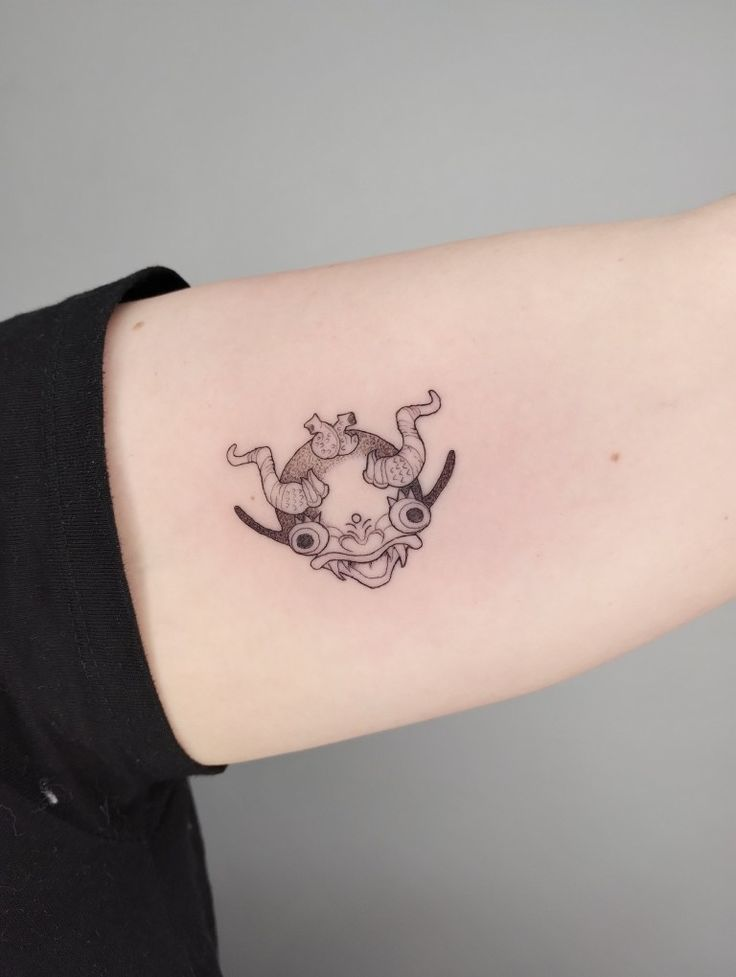
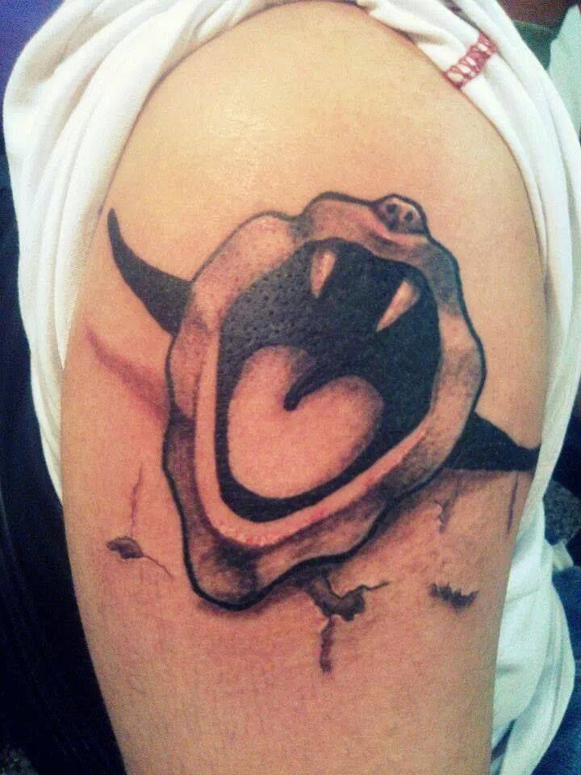
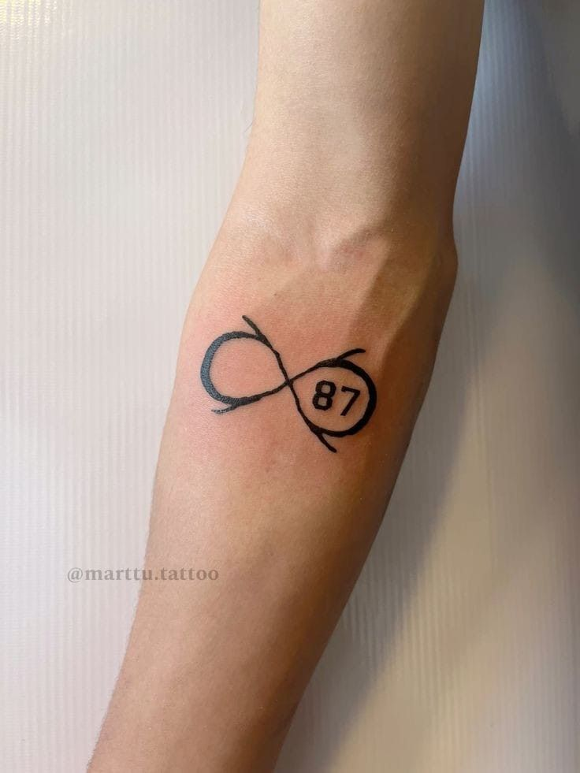
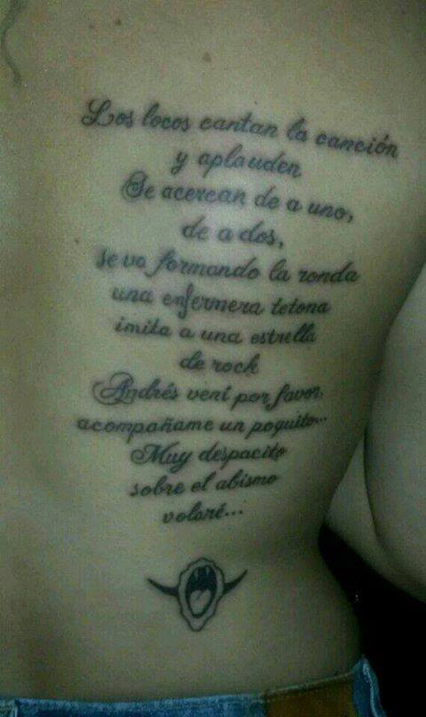
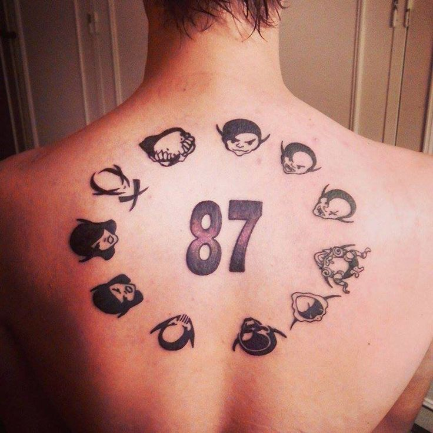
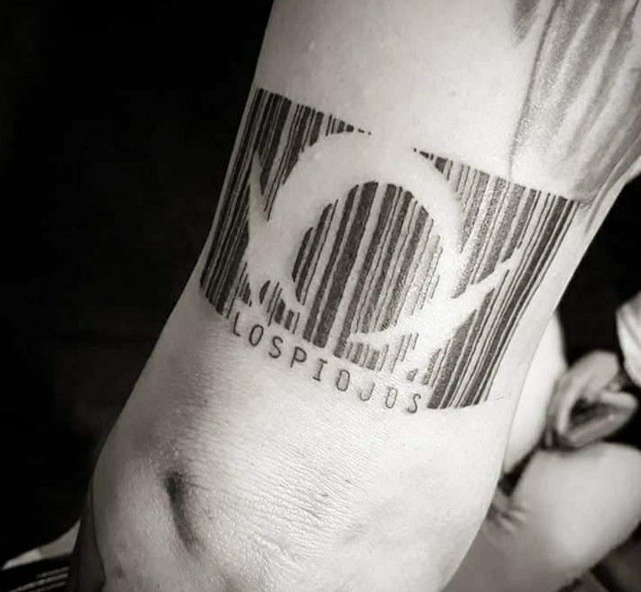
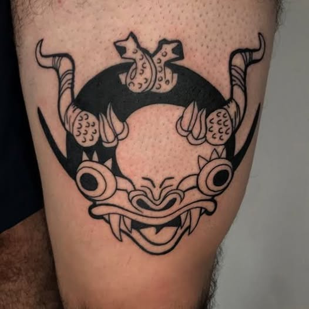
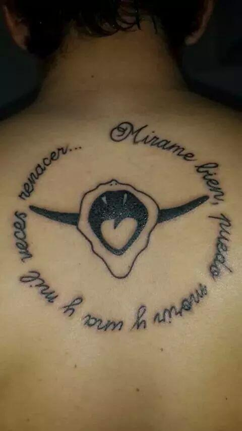

Un Tatuaje Azul








Hasta Donde Estes, Adonde Vayas
La pasión por Los Piojos va más allá de la música. Muchos piojosos llevan en la piel la marca de esta historia, con tatuajes que representan su amor eterno por la banda.
¡Compartí tu tatuaje piojoso en tus redes con el hashtag #TatuajePiojoso!